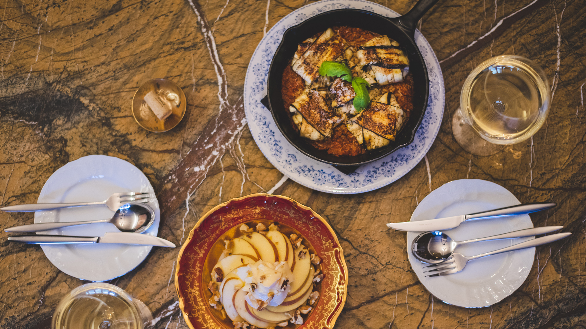

-
mom
labal -
à la brune아라브륀느
1,745
#아라브륀느#압구정로데오#와인바
#프랑스가정식#팍시#사과브리치즈샐러드#winebar#alabrune
아늑한 분위기로 초대, à la brune
해질녘, 황혼을 의미하는 프랑스어, à la brune(아라브륀느). 해가 질 무렵 그리운 사람들과 함께 와인 한잔 기울이며 하루를 마무리하기 좋은 이 곳과 아주 잘 어울리는 단어다. 정 많은 공간, 정성스런 요리들이 오늘 하루 지친 우리들의 몸과 마음을 어루만져 줘, 와인바를 방문한 모든 이들을 반복해서 찾을 수 밖에 없게 만든다.
- 
# 요리하는 소믈리에 ‘ 그 나라를 대표하는 재료와 요리는, 그 나라의 와인과 즐겨야 환상의 조합이 나온다. ’ 한국에서 조그만 바를 운영하고 싶은 꿈을 가진 한 프랑스 유학생이 와인은 물론이고 한국의 수입 유통 실정에 대해서도 많은 공부를 하고 돌아 와, 압구정로데오에 조그만 바를 차렸다. 이런 끊임없는 노력 끝에 와인바 ‘아라브륀느＇의 대표가 됐지만, 그녀의 와인에 대한 열정은 아직도 현재 진행중이다. 대표님에게 와인바 메뉴들은 프랑스 유학 시절, 친구네 집에서 먹었던 것들과 알바를 할 때 맛있었던 새참의 기억이 담겨 있는 곳이다. 그 기억들을 더듬어 집에서도 만들어 보고, 프렌치 레스토랑에도 다닌 경험들이 하나하나 쌓여서 지금의 메뉴들이 탄생했다.
# 셰프 추천 와인!
여름에 많이 마시는 와인
‘ Sauvignon blanc(소비뇽 블랑) ’
쉐프부터 소믈리에까지 맡고 계신 아라브륀느 대표님이 합리적인 가격에 품질도 뛰어난 와인을 추천해 주셨다. 레스토랑에 방문해 소믈리에 대표님의 친절한 설명을 듣고 나면, 와인과 친하지 않는 사람들도 쉽게 다가갈 수 있을 것이다.

# Recommended Dishes ‘ 팍시 (farci) ’ 프랑스에서는 요리 방식이 이름이 되는 경우가 많다. ‘사탕을 싸는 포장지＇ 라는 뜻의 파피요트(papillote)와 ‘속을 채우다＇에서 따 온 팍시(farci)가 그 예이다. 아라브륀느의 시그니쳐 메뉴인 팍시는 대표님이 프랑스에서 포도 따기 알바를 할 때 새참으로 먹다가 너무 맛있어서 주력하게 되었다. 편하고 부담 없는 소박한 음식인 팍시와 딱딱하고 클래식하지 않는 분위기의 아라브륀느는 공통점이 많아 보인다. ‘무언가를 채워 넣다’ 라는 팍시의 뜻처럼 와인바에 잠시 들려 가슴 속에 무언가를 채워 넣고 갔으면 하는 바람이, 아라브륀느의 대표가 팍시 요리를 끊임없이 연구하는 이유다.
Editor.D
편안하면서도 우아한 분위기에 취해 와인 한잔을 기울이기 좋다.
무겁지 않은 음식들은 와인과 함께하기 딱이었다.Editor.S
아라브륀느의 팍시를 먹어 본 사람이라면 다른 종류의 팍시도 먹어보고 싶어, 또다시 방문할 수 밖에 없을 것이다.
- 서울 강남구 선릉로 153길 32
- 월~토 18:00 ~ 02:00
- 매주 월요일 휴무
- 02-544-5413
- 발렛 파킹 가능
- Apple and brie cheese salad - 15,000원
- Scallop cream farci – 23,000원
- Mushroom farcl - 20,000원
- Burrata cheese basil pesto pasta - 29,000원
- Assorted cheese plate - 34,000원
- corkage – 30,000원
- Editor. 이수지
- PHOTOGRAPHY. 이성호